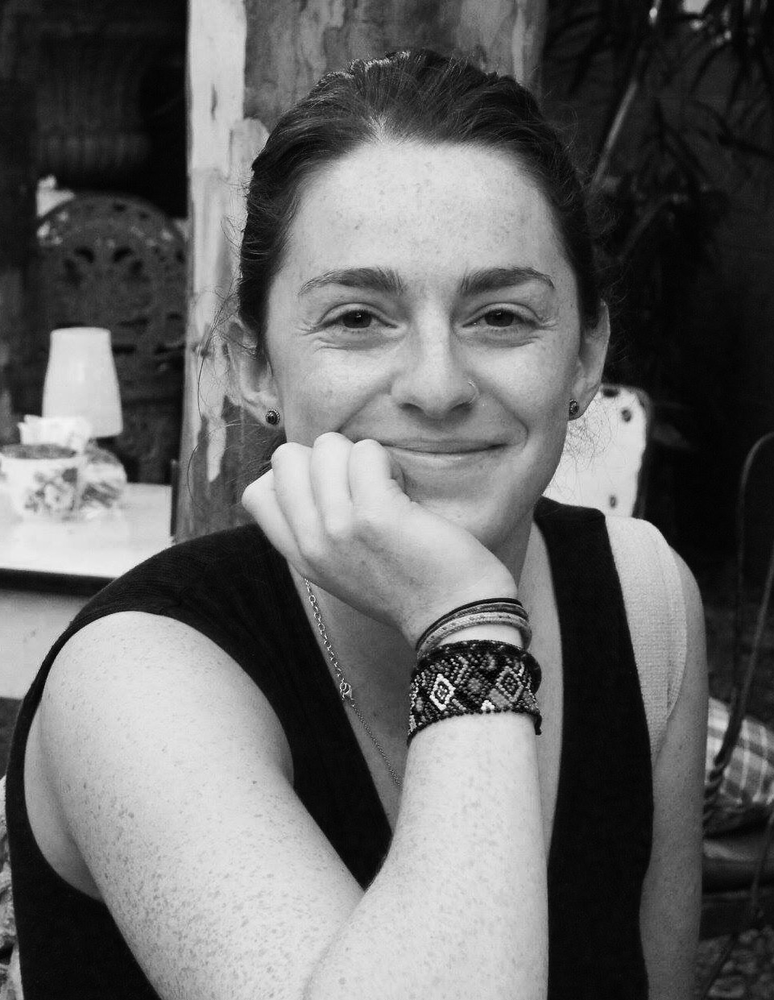
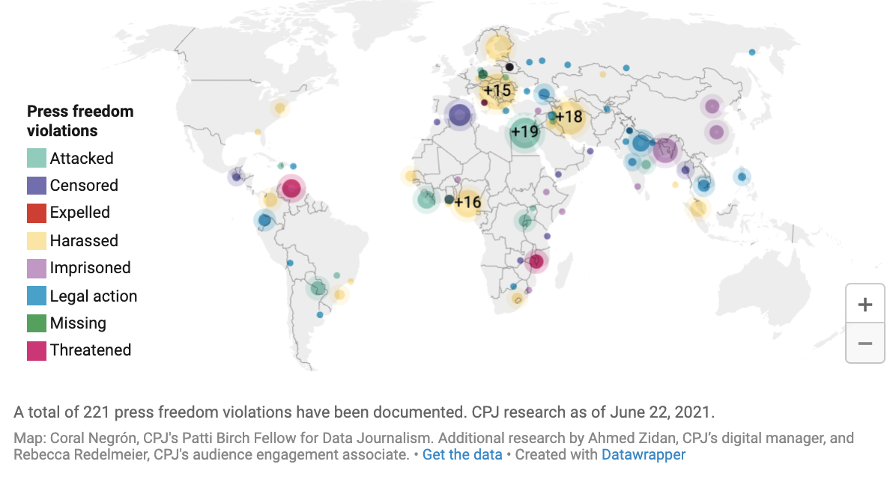

Hi! I'm Rebecca Redelmeier. I'm a journalist and audience engagement specialist.
Drop me a line or check out my work below.

Facts about my life: I'm big into bagels. Also...
I am the audience engagement associate at the Committee to Protect Journalists, where I work to engage audiences with our reporting and research on global press freedom. I also report on select press freedom issues and help visualize data about attacks on the press around the world.
Previously, I developed reports and data stories for NewsWhip, a leading audience insights platform used by the Associated Press, Washington Post, Canadian Press, and more. My research on generating traction on social through using hashtags was referenced by the Poynter Institute.
In 2018, I spent two months as a junior reporter at the Daily Maverick and GroundUp News, two top South African news publications based in Cape Town. I covered politics and the environment and worked with the #GuptaLeaks team. Following, I was awarded a fellowship by the Overseas Press Club of America for my reporting on Cape Town's transgender community. I have also contributed to Orion, Public Radio International's Living on Earth, and numerous campus publications.
I graduated from Tufts University in May 2019 after completing a Bachelor of Arts with an English major and a computer science minor.
Feel free to get in touch.
Selected Work

Election disinformation happens all over the world. These journalists are combating it.
Committee to Protect Journalists, 11 March 2021

Data journalists describe challenges of reporting on the true toll of COVID-19
Committee to Protect Journalists, 14 July 2020
Five journalists discuss the challenges of reporting on COVID-19 data...

‘Like an open-air cage’: Police restrict reporters’ access to Canadian anti-logging protests
Committee to Protect Journalists, 28 June 2021
As demonstrators in British Columbia protest the logging of one of the province’s last old-growth forests, journalists have been impeded from covering the story...

Russia couldn’t block Telegram, but harassment, propaganda make it hostile for journalists
Committee to Protect Journalists, 6 May 2021
Though Telegram is now unrestricted in Russia, journalists report harassment and propaganda is making it harder to use...

Mapping COVID-19 and press freedom violations
Committee to Protect Journalists
A total of 221 press freedom violations have been documented, as of June 22, 2021...

Hashtags on social: What you need to know
NewsWhip, 2 July 2018
In this report, we dive into how different hashtag strategies can help generate engagement on across social...

When trees are all you've got for title deeds
Daily Maverick, 10 May 2018
Land expropriation without compensation in Cape Town...

Media freedom in the Age of Falsehoods
Daily Maverick, 3 May 2018
Marking World Press Freedom Day on May 3...
-->

Youth Unemployment in Focus: When you’re job-hunting so long that you’re no longer young
Daily Maverick, 20 April 2018
South Africa has a serious unemployment problem, particularly among young people...

In Masiphumelele’s wetlands, everyone dreads the winter
GroundUp, 18 April 2018
Shackdwellers fear winter storms...

No such thing as a free lunch for Cape Town’s homeless
Daily Maverick, 16 April 2018
Three youths wait, hungry. As Cape Town bustles around them, they stand mostly still, stuck in the limbo of the line...

As Sea Levels Rise, Nantucket Shores Up Crumbling Beaches
Living on Earth 23 February 2018
Erosion and rising seas are threatening some of Nantucket's most expensive real estate...

Tufts by Numbers: Will the tuition bubble ever be burst?
Tufts Daily News, 6 April 2017
As costs for college climb steadily upwards, will they ever hit a ceiling?

National discourse on sanctuary campuses: Where does Tufts fit in?
Tufts Daily News, 12 December 2016
Since Election Day, almost 200 sanctuary campus petitions have emerged nationwide, according to Xavier Maciel, a first-year transfer student at Pomona College...